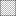
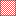

<!doctype html>
<html lang="en">
    <head>
        <meta charset="utf-8">
        <meta http-equiv="X-UA-Compatible" content="IE=edge">
        <meta name="viewport" content="initial-scale=1,user-scalable=no,maximum-scale=1,width=device-width">
        <meta name="mobile-web-app-capable" content="yes">
        <meta name="apple-mobile-web-app-capable" content="yes">
        <link rel="stylesheet" href="css/leaflet.css"><link rel="stylesheet" href="css/L.Control.Locate.min.css">
        <link rel="stylesheet" href="css/qgis2web.css"><link rel="stylesheet" href="css/fontawesome-all.min.css">
        <link rel="stylesheet" href="css/leaflet-search.css">
        <link rel="stylesheet" href="css/leaflet-control-geocoder.Geocoder.css">
        <link rel="stylesheet" href="css/leaflet-measure.css">
        <style>
        html, body, #map {
            width: 100%;
            height: 100%;
            padding: 0;
            margin: 0;
        }
        </style>
        <title>Mapa de homicidios en cercanias de centros religiosos</title>
    </head>
    <body>
        <div id="map">
        </div>
        <script src="js/qgis2web_expressions.js"></script>
        <script src="js/leaflet.js"></script><script src="js/L.Control.Locate.min.js"></script>
        <script src="js/leaflet.rotatedMarker.js"></script>
        <script src="js/leaflet.pattern.js"></script>
        <script src="js/leaflet-hash.js"></script>
        <script src="js/Autolinker.min.js"></script>
        <script src="js/rbush.min.js"></script>
        <script src="js/labelgun.min.js"></script>
        <script src="js/labels.js"></script>
        <script src="js/leaflet-control-geocoder.Geocoder.js"></script>
        <script src="js/leaflet-measure.js"></script>
        <script src="js/leaflet-search.js"></script>
        <script src="data/barrios_1.js"></script>
        <script src="data/Centros_Seguridad_2.js"></script>
        <script src="data/Rangodehomicidiosenareadeinfluenciadecentrosreligioso_3.js"></script>
        <script src="data/Centros_religiosos_4.js"></script>
        <script src="data/Ruta_policia_5.js"></script>
        <script src="data/Venta_spa_6.js"></script>
        <script>
        var map = L.map('map', {
            zoomControl:true, maxZoom:19, minZoom:15
        }).fitBounds([[3.424145202249144,-76.51519147718474],[3.4420020033341148,-76.48695128776052]]);
        var hash = new L.Hash(map);
        map.attributionControl.setPrefix('<a href="https://github.com/tomchadwin/qgis2web" target="_blank">qgis2web</a> &middot; <a href="https://leafletjs.com" title="A JS library for interactive maps">Leaflet</a> &middot; <a href="https://qgis.org">QGIS</a>');
        var autolinker = new Autolinker({truncate: {length: 30, location: 'smart'}});
        L.control.locate({locateOptions: {maxZoom: 19}}).addTo(map);
        var measureControl = new L.Control.Measure({
            position: 'topleft',
            primaryLengthUnit: 'meters',
            secondaryLengthUnit: 'kilometers',
            primaryAreaUnit: 'sqmeters',
            secondaryAreaUnit: 'hectares'
        });
        measureControl.addTo(map);
        document.getElementsByClassName('leaflet-control-measure-toggle')[0]
        .innerHTML = '';
        document.getElementsByClassName('leaflet-control-measure-toggle')[0]
        .className += ' fas fa-ruler';
        var bounds_group = new L.featureGroup([]);
        function setBounds() {
        }
        map.createPane('pane_GoogleRoad_0');
        map.getPane('pane_GoogleRoad_0').style.zIndex = 400;
        var layer_GoogleRoad_0 = L.tileLayer('https://mt1.google.com/vt/lyrs=m&x={x}&y={y}&z={z}', {
            pane: 'pane_GoogleRoad_0',
            opacity: 1.0,
            attribution: '<a href="https://www.google.at/permissions/geoguidelines/attr-guide.html">Map data ©2015 Google</a>',
            minZoom: 15,
            maxZoom: 19,
            minNativeZoom: 0,
            maxNativeZoom: 20
        });
        layer_GoogleRoad_0;
        map.addLayer(layer_GoogleRoad_0);
        function pop_barrios_1(feature, layer) {
            var popupContent = '<table>\
                    <tr>\
                        <td colspan="2">' + (feature.properties['gid'] !== null ? autolinker.link(feature.properties['gid'].toLocaleString()) : '') + '</td>\
                    </tr>\
                    <tr>\
                        <td colspan="2">' + (feature.properties['id_barrio'] !== null ? autolinker.link(feature.properties['id_barrio'].toLocaleString()) : '') + '</td>\
                    </tr>\
                    <tr>\
                        <th scope="row">barrio</th>\
                        <td>' + (feature.properties['barrio'] !== null ? autolinker.link(feature.properties['barrio'].toLocaleString()) : '') + '</td>\
                    </tr>\
                    <tr>\
                        <th scope="row">comuna</th>\
                        <td>' + (feature.properties['comuna'] !== null ? autolinker.link(feature.properties['comuna'].toLocaleString()) : '') + '</td>\
                    </tr>\
                    <tr>\
                        <th scope="row">estra_moda</th>\
                        <td>' + (feature.properties['estra_moda'] !== null ? autolinker.link(feature.properties['estra_moda'].toLocaleString()) : '') + '</td>\
                    </tr>\
                    <tr>\
                        <th scope="row">area</th>\
                        <td>' + (feature.properties['area'] !== null ? autolinker.link(feature.properties['area'].toLocaleString()) : '') + '</td>\
                    </tr>\
                    <tr>\
                        <td colspan="2">' + (feature.properties['perimetro'] !== null ? autolinker.link(feature.properties['perimetro'].toLocaleString()) : '') + '</td>\
                    </tr>\
                </table>';
            layer.bindPopup(popupContent, {maxHeight: 400});
        }

        function style_barrios_1_0() {
            return {
                pane: 'pane_barrios_1',
                opacity: 1,
                color: 'rgba(255,255,255,1.0)',
                dashArray: '',
                lineCap: 'butt',
                lineJoin: 'miter',
                weight: 1.0, 
                fill: true,
                fillOpacity: 1,
                fillColor: 'rgba(187,158,71,1.0)',
                interactive: true,
            }
        }
        map.createPane('pane_barrios_1');
        map.getPane('pane_barrios_1').style.zIndex = 401;
        map.getPane('pane_barrios_1').style['mix-blend-mode'] = 'normal';
        var layer_barrios_1 = new L.geoJson(json_barrios_1, {
            attribution: '',
            interactive: true,
            dataVar: 'json_barrios_1',
            layerName: 'layer_barrios_1',
            pane: 'pane_barrios_1',
            onEachFeature: pop_barrios_1,
            style: style_barrios_1_0,
        });
        bounds_group.addLayer(layer_barrios_1);
        map.addLayer(layer_barrios_1);
        function pop_Centros_Seguridad_2(feature, layer) {
            var popupContent = '<table>\
                    <tr>\
                        <td colspan="2">' + (feature.properties['gid'] !== null ? autolinker.link(feature.properties['gid'].toLocaleString()) : '') + '</td>\
                    </tr>\
                    <tr>\
                        <td colspan="2">' + (feature.properties['id'] !== null ? autolinker.link(feature.properties['id'].toLocaleString()) : '') + '</td>\
                    </tr>\
                    <tr>\
                        <th scope="row">nombre</th>\
                        <td>' + (feature.properties['nombre'] !== null ? autolinker.link(feature.properties['nombre'].toLocaleString()) : '') + '</td>\
                    </tr>\
                    <tr>\
                        <th scope="row">tipo</th>\
                        <td>' + (feature.properties['tipo'] !== null ? autolinker.link(feature.properties['tipo'].toLocaleString()) : '') + '</td>\
                    </tr>\
                    <tr>\
                        <th scope="row">propiedad</th>\
                        <td>' + (feature.properties['propiedad'] !== null ? autolinker.link(feature.properties['propiedad'].toLocaleString()) : '') + '</td>\
                    </tr>\
                </table>';
            layer.bindPopup(popupContent, {maxHeight: 400});
        }

        function style_Centros_Seguridad_2_0() {
            return {
                pane: 'pane_Centros_Seguridad_2',
                opacity: 1,
                color: 'rgba(35,35,35,1.0)',
                dashArray: '',
                lineCap: 'butt',
                lineJoin: 'miter',
                weight: 1.0, 
                fill: true,
                fillOpacity: 1,
                fillColor: 'rgba(38,16,239,1.0)',
                interactive: true,
            }
        }
        map.createPane('pane_Centros_Seguridad_2');
        map.getPane('pane_Centros_Seguridad_2').style.zIndex = 402;
        map.getPane('pane_Centros_Seguridad_2').style['mix-blend-mode'] = 'normal';
        var layer_Centros_Seguridad_2 = new L.geoJson(json_Centros_Seguridad_2, {
            attribution: '',
            interactive: true,
            dataVar: 'json_Centros_Seguridad_2',
            layerName: 'layer_Centros_Seguridad_2',
            pane: 'pane_Centros_Seguridad_2',
            onEachFeature: pop_Centros_Seguridad_2,
            style: style_Centros_Seguridad_2_0,
        });
        bounds_group.addLayer(layer_Centros_Seguridad_2);
        map.addLayer(layer_Centros_Seguridad_2);
        function pop_Rangodehomicidiosenareadeinfluenciadecentrosreligioso_3(feature, layer) {
            var popupContent = '<table>\
                    <tr>\
                        <td colspan="2">' + (feature.properties['id_cr'] !== null ? autolinker.link(feature.properties['id_cr'].toLocaleString()) : '') + '</td>\
                    </tr>\
                    <tr>\
                        <th scope="row">nombre</th>\
                        <td>' + (feature.properties['nombre'] !== null ? autolinker.link(feature.properties['nombre'].toLocaleString()) : '') + '</td>\
                    </tr>\
                    <tr>\
                        <th scope="row">barrio</th>\
                        <td>' + (feature.properties['barrio'] !== null ? autolinker.link(feature.properties['barrio'].toLocaleString()) : '') + '</td>\
                    </tr>\
                    <tr>\
                        <th scope="row">num_homici</th>\
                        <td>' + (feature.properties['num_homici'] !== null ? autolinker.link(feature.properties['num_homici'].toLocaleString()) : '') + '</td>\
                    </tr>\
                </table>';
            layer.bindPopup(popupContent, {maxHeight: 400});
        }

        function style_Rangodehomicidiosenareadeinfluenciadecentrosreligioso_3_0(feature) {
            if (feature.properties['num_homici'] >= 0.000000 && feature.properties['num_homici'] <= 4.000000 ) {
                return {
                pane: 'pane_Rangodehomicidiosenareadeinfluenciadecentrosreligioso_3',
                opacity: 1,
                color: 'rgba(35,35,35,1.0)',
                dashArray: '',
                lineCap: 'butt',
                lineJoin: 'miter',
                weight: 1.0, 
                fill: true,
                fillOpacity: 1,
                fillColor: 'rgba(77,222,29,1.0)',
                interactive: true,
            }
            }
            if (feature.properties['num_homici'] >= 4.000000 && feature.properties['num_homici'] <= 8.000000 ) {
                return {
                pane: 'pane_Rangodehomicidiosenareadeinfluenciadecentrosreligioso_3',
                opacity: 1,
                color: 'rgba(35,35,35,1.0)',
                dashArray: '',
                lineCap: 'butt',
                lineJoin: 'miter',
                weight: 1.0, 
                fill: true,
                fillOpacity: 1,
                fillColor: 'rgba(245,245,20,1.0)',
                interactive: true,
            }
            }
            if (feature.properties['num_homici'] >= 8.000000 && feature.properties['num_homici'] <= 12.000000 ) {
                return {
                pane: 'pane_Rangodehomicidiosenareadeinfluenciadecentrosreligioso_3',
                opacity: 1,
                color: 'rgba(35,35,35,1.0)',
                dashArray: '',
                lineCap: 'butt',
                lineJoin: 'miter',
                weight: 1.0, 
                fill: true,
                fillOpacity: 1,
                fillColor: 'rgba(255,0,0,1.0)',
                interactive: true,
            }
            }
        }
        map.createPane('pane_Rangodehomicidiosenareadeinfluenciadecentrosreligioso_3');
        map.getPane('pane_Rangodehomicidiosenareadeinfluenciadecentrosreligioso_3').style.zIndex = 403;
        map.getPane('pane_Rangodehomicidiosenareadeinfluenciadecentrosreligioso_3').style['mix-blend-mode'] = 'normal';
        var layer_Rangodehomicidiosenareadeinfluenciadecentrosreligioso_3 = new L.geoJson(json_Rangodehomicidiosenareadeinfluenciadecentrosreligioso_3, {
            attribution: '',
            interactive: true,
            dataVar: 'json_Rangodehomicidiosenareadeinfluenciadecentrosreligioso_3',
            layerName: 'layer_Rangodehomicidiosenareadeinfluenciadecentrosreligioso_3',
            pane: 'pane_Rangodehomicidiosenareadeinfluenciadecentrosreligioso_3',
            onEachFeature: pop_Rangodehomicidiosenareadeinfluenciadecentrosreligioso_3,
            style: style_Rangodehomicidiosenareadeinfluenciadecentrosreligioso_3_0,
        });
        bounds_group.addLayer(layer_Rangodehomicidiosenareadeinfluenciadecentrosreligioso_3);
        map.addLayer(layer_Rangodehomicidiosenareadeinfluenciadecentrosreligioso_3);
        function pop_Centros_religiosos_4(feature, layer) {
            var popupContent = '<table>\
                    <tr>\
                        <td colspan="2">' + (feature.properties['id_cr'] !== null ? autolinker.link(feature.properties['id_cr'].toLocaleString()) : '') + '</td>\
                    </tr>\
                    <tr>\
                        <th scope="row">nombre</th>\
                        <td>' + (feature.properties['nombre'] !== null ? autolinker.link(feature.properties['nombre'].toLocaleString()) : '') + '</td>\
                    </tr>\
                    <tr>\
                        <th scope="row">barrio</th>\
                        <td>' + (feature.properties['barrio'] !== null ? autolinker.link(feature.properties['barrio'].toLocaleString()) : '') + '</td>\
                    </tr>\
                    <tr>\
                        <th scope="row">num_homicidios</th>\
                        <td>' + (feature.properties['num_homicidios'] !== null ? autolinker.link(feature.properties['num_homicidios'].toLocaleString()) : '') + '</td>\
                    </tr>\
                </table>';
            layer.bindPopup(popupContent, {maxHeight: 400});
        }

        function style_Centros_religiosos_4_0() {
            return {
                pane: 'pane_Centros_religiosos_4',
                opacity: 1,
                color: 'rgba(35,35,35,1.0)',
                dashArray: '',
                lineCap: 'butt',
                lineJoin: 'miter',
                weight: 1.0, 
                fill: true,
                fillOpacity: 1,
                fillColor: 'rgba(0,244,236,1.0)',
                interactive: true,
            }
        }
        map.createPane('pane_Centros_religiosos_4');
        map.getPane('pane_Centros_religiosos_4').style.zIndex = 404;
        map.getPane('pane_Centros_religiosos_4').style['mix-blend-mode'] = 'normal';
        var layer_Centros_religiosos_4 = new L.geoJson(json_Centros_religiosos_4, {
            attribution: '',
            interactive: true,
            dataVar: 'json_Centros_religiosos_4',
            layerName: 'layer_Centros_religiosos_4',
            pane: 'pane_Centros_religiosos_4',
            onEachFeature: pop_Centros_religiosos_4,
            style: style_Centros_religiosos_4_0,
        });
        bounds_group.addLayer(layer_Centros_religiosos_4);
        map.addLayer(layer_Centros_religiosos_4);
        function pop_Ruta_policia_5(feature, layer) {
            var popupContent = '<table>\
                    <tr>\
                        <td colspan="2">' + (feature.properties['id_rt'] !== null ? autolinker.link(feature.properties['id_rt'].toLocaleString()) : '') + '</td>\
                    </tr>\
                    <tr>\
                        <th scope="row">nombre</th>\
                        <td>' + (feature.properties['nombre'] !== null ? autolinker.link(feature.properties['nombre'].toLocaleString()) : '') + '</td>\
                    </tr>\
                    <tr>\
                        <th scope="row">estado_via</th>\
                        <td>' + (feature.properties['estado_via'] !== null ? autolinker.link(feature.properties['estado_via'].toLocaleString()) : '') + '</td>\
                    </tr>\
                    <tr>\
                        <th scope="row">estacion_respuesta</th>\
                        <td>' + (feature.properties['estacion_respuesta'] !== null ? autolinker.link(feature.properties['estacion_respuesta'].toLocaleString()) : '') + '</td>\
                    </tr>\
                </table>';
            layer.bindPopup(popupContent, {maxHeight: 400});
        }

        function style_Ruta_policia_5_0() {
            return {
                pane: 'pane_Ruta_policia_5',
                opacity: 1,
                color: 'rgba(113,99,104,1.0)',
                dashArray: '10,5',
                lineCap: 'square',
                lineJoin: 'bevel',
                weight: 3.0,
                fillOpacity: 0,
                interactive: true,
            }
        }
        map.createPane('pane_Ruta_policia_5');
        map.getPane('pane_Ruta_policia_5').style.zIndex = 405;
        map.getPane('pane_Ruta_policia_5').style['mix-blend-mode'] = 'normal';
        var layer_Ruta_policia_5 = new L.geoJson(json_Ruta_policia_5, {
            attribution: '',
            interactive: true,
            dataVar: 'json_Ruta_policia_5',
            layerName: 'layer_Ruta_policia_5',
            pane: 'pane_Ruta_policia_5',
            onEachFeature: pop_Ruta_policia_5,
            style: style_Ruta_policia_5_0,
        });
        bounds_group.addLayer(layer_Ruta_policia_5);
        map.addLayer(layer_Ruta_policia_5);
        function pop_Venta_spa_6(feature, layer) {
            var popupContent = '<table>\
                    <tr>\
                        <td colspan="2">' + (feature.properties['id_spa'] !== null ? autolinker.link(feature.properties['id_spa'].toLocaleString()) : '') + '</td>\
                    </tr>\
                    <tr>\
                        <th scope="row">droga</th>\
                        <td>' + (feature.properties['droga'] !== null ? autolinker.link(feature.properties['droga'].toLocaleString()) : '') + '</td>\
                    </tr>\
                    <tr>\
                        <th scope="row">barrio</th>\
                        <td>' + (feature.properties['barrio'] !== null ? autolinker.link(feature.properties['barrio'].toLocaleString()) : '') + '</td>\
                    </tr>\
                    <tr>\
                        <th scope="row">banda</th>\
                        <td>' + (feature.properties['banda'] !== null ? autolinker.link(feature.properties['banda'].toLocaleString()) : '') + '</td>\
                    </tr>\
                </table>';
            layer.bindPopup(popupContent, {maxHeight: 400});
        }

        function style_Venta_spa_6_0() {
            return {
                pane: 'pane_Venta_spa_6',
                radius: 4.0,
                opacity: 1,
                color: 'rgba(35,35,35,1.0)',
                dashArray: '',
                lineCap: 'butt',
                lineJoin: 'miter',
                weight: 1,
                fill: true,
                fillOpacity: 1,
                fillColor: 'rgba(245,96,208,1.0)',
                interactive: true,
            }
        }
        map.createPane('pane_Venta_spa_6');
        map.getPane('pane_Venta_spa_6').style.zIndex = 406;
        map.getPane('pane_Venta_spa_6').style['mix-blend-mode'] = 'normal';
        var layer_Venta_spa_6 = new L.geoJson(json_Venta_spa_6, {
            attribution: '',
            interactive: true,
            dataVar: 'json_Venta_spa_6',
            layerName: 'layer_Venta_spa_6',
            pane: 'pane_Venta_spa_6',
            onEachFeature: pop_Venta_spa_6,
            pointToLayer: function (feature, latlng) {
                var context = {
                    feature: feature,
                    variables: {}
                };
                return L.circleMarker(latlng, style_Venta_spa_6_0(feature));
            },
        });
        bounds_group.addLayer(layer_Venta_spa_6);
        map.addLayer(layer_Venta_spa_6);
            var title = new L.Control();
            title.onAdd = function (map) {
                this._div = L.DomUtil.create('div', 'info');
                this.update();
                return this._div;
            };
            title.update = function () {
                this._div.innerHTML = '<h2>Mapa de homicidios en cercanias de centros religiosos</h2>';
            };
            title.addTo(map);
        var osmGeocoder = new L.Control.Geocoder({
            collapsed: true,
            position: 'topleft',
            text: 'Search',
            title: 'Testing'
        }).addTo(map);
        document.getElementsByClassName('leaflet-control-geocoder-icon')[0]
        .className += ' fa fa-search';
        document.getElementsByClassName('leaflet-control-geocoder-icon')[0]
        .title += 'Search for a place';
        var baseMaps = {};
        L.control.layers(baseMaps,{' Venta_spa': layer_Venta_spa_6,' Ruta_policia': layer_Ruta_policia_5,' Centros_religiosos': layer_Centros_religiosos_4,'Rango de homicidios en area de influencia de centros religioso<br /><table><tr><td style="text-align: center;"></td><td>0 - 4 Homicidios</td></tr><tr><td style="text-align: center;"></td><td>4 - 8 Homicidios</td></tr><tr><td style="text-align: center;"></td><td>8 - 12 Homicidios</td></tr></table>': layer_Rangodehomicidiosenareadeinfluenciadecentrosreligioso_3,' Centros_Seguridad': layer_Centros_Seguridad_2,' barrios': layer_barrios_1,"Google Road": layer_GoogleRoad_0,}).addTo(map);
        setBounds();
        map.addControl(new L.Control.Search({
            layer: layer_Centros_religiosos_4,
            initial: false,
            hideMarkerOnCollapse: true,
            propertyName: 'nombre'}));
        document.getElementsByClassName('search-button')[0].className +=
         ' fa fa-binoculars';
        resetLabels([layer_Centros_religiosos_4]);
        map.on("zoomend", function(){
            resetLabels([layer_Centros_religiosos_4]);
        });
        map.on("layeradd", function(){
            resetLabels([layer_Centros_religiosos_4]);
        });
        map.on("layerremove", function(){
            resetLabels([layer_Centros_religiosos_4]);
        });
        </script>
    </body>
</html>
